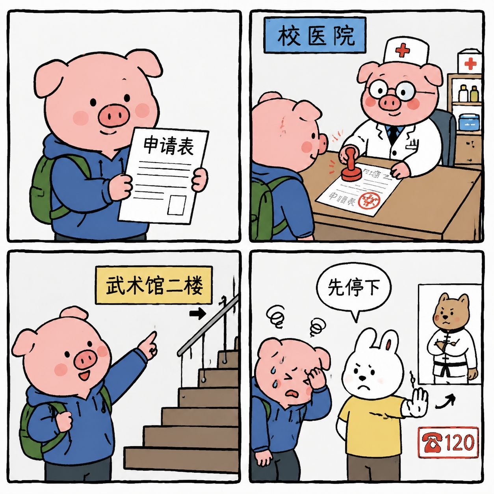

2026年保健体育申请
9月1日至9月23日
常用服务
本学期先看

申请流程
1先看通知
准备申请表
准备申请表
2去校医院
保健科签章
保健科签章
3到鸣华武术馆
二楼找承办点
二楼找承办点
4关注申请群
电话反馈
电话反馈
学生端
学校体育办事
专题指南
规则问答库
智能问答
输入问题，系统只从已整理的规则库中匹配答案。
按公开规则试算
体测成绩核算
直接输入原始成绩，页面按已录入的大学组评分档位试算单项分和总分。最终成绩以学校体测系统为准。
打开官方单项评分表BMI = 体重（千克）÷ 身高²（米²）。结果按国家学生体质健康标准大学组区间解释。
国家标准：毕业学年占50%，其他学年平均分占50%。免测学年的校内处理按经验参照显示，最终以体测系统为准。
教师与辅导员端
教师帮助
教师公开信息与课程体验分开
姓名、职称和公开简介来自学院官网；课程沟通体验只做匿名归纳，不公开未经授权的实名评分。
常用服务
课程强度参考
输入一次课时长和课后主观用力感（RPE 0-10），得到教学记录用的训练负荷参考。
课程体验观察维度
具体场馆